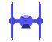

ABOUT
Do you want to make the rules, be your own boss, do what you want when you want it, treat this universe as your playground? Then try a career in intergalactic deliveries.
See the marvels of the universe and be paid for the privilege as you travel from place to place, delivering parcels to clients. Play it safe, with regular deliveries from responsible companies, or play fast and loose at the more disreputable end of the market. Build a reputation and secret agencies will offer you highly paid and dangerous work dodging pirates and border guards, crossing through war zones, risking yourself and your ship in search of a fast buck.
This is the new economy where everyone works for themselves, job security is a forgotten memory and you live by your reputation. You're a regular maverick in a future world and this is your galaxy.


Intergalactic Delivery Driver uses a unique tilt mechanic to control your spacecraft. The accelerometer and gyroscope in your phone can be used for so much more than simulating gravity.
When you tilt your phone the change in orientation is reduced to two dimensions and adjusted to be directly analogous to the input from an analogue joystick. In fact, if you have a device with an analogue joystick you can use that instead of the tilt - the game works the same either way.
Combining this with some pretty extreme acceleration and drag produces a very responsive, subtle and intuitive control mechanism that is ideally suited to a small device that sits in your hand. Intergalactic Delivery Driver is a revolution in mobile game input that could finally consign the soft joystick to the trash can.
Development of Intergalactic Delivery Driver is currently on hold while I do some work with King, where I am assisting them to develop a new Call of Duty mobile game.